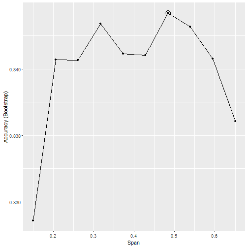

Survival Analysis
Adam J Sullivan
Assistant Professor of Biostatistics
Brown University
Survival Analysis
Intro
- We now move into an area that is very useful and gaining even more applications than was originally intended. Our goal for this unit is to cover the basics of Survival Analysis.
- The math behind most survival analysis is beyond even master's statisticians.
- It requires a strong knowledge of measure spaces, martingales and other theoretical math concepts. We will not focus on this but instead will discuss how to actually analyze this type of data.
Survival Analysis Motivations
- Analysis for events did not allow time to vary between subjects so we learned about Analysis of Incidence Rates (Poisson Regression).
- Analysis of Incidence rates did not allow the event rate to vary over time.
- Survival Analysis refers to the analysis of survival time (
time to event), where rate can depend on time in many cases.
Survival Analysis Motivations
- Goals of Survival Analysis:
- Estimate distribution of of survival time for a population
- Test for equality of survival distributions among 2 or more groups
- Control
- Treated
- Estimate the absolute or relative treatment effects
- Estimate and control for effects of other covariates
- Confounding
- Effect Modification/Interaction
- Find confidence intervals and significance for effects.
Describing and Characterizing Survival Data
- The event
- What is the event of interest?
- How is it specifically defined?
- The Origin
- What is the initial starting point?
- This must be before anyone in the study has had the event of interest.
- The Metric for time
- What is the scale in which events are recorded.
Examples
Time to relapse after end of treatment among cancer patients.
- Event: Relapse of Cancer
- Origin: End of Treatment.
- Time Metric: Days
Length of stay in hospital for patients who suffered a heart attack.
- Event: Length of Stay.
- Origin: Admission to Hospital.
- Time Metric: Hours.
Examples
- Age of onset of breast cancer in individuals with family history.
- Event: Onset of Breast Cancer.
- Origin: Birth.
- Time Metric: Years
The Survival Function
The random variable of interest, \(T\) is the time to the event of interest. We then know that \(T\) is positive and by definition: \[T\ge0\]
The Survival function, \(S(t)\), is the proportion of individuals who have not experienced at event at some time \(t>0\).This is defined by: \[S(t) = \Pr(T>t)\]
- If the event of interest is death, this would mean the subject is still alive at time \(t\).
- Then \(S(t)\) would be the proportion of subjects alive at time \(t\).
- This simple proportion is for when there is no censoring (discussed later on).
###Features of \(S(t)\)
A survivor function is a sequence of probabilities up till time \(t\) \[0\le S(t)\le1, \qquad \text{ for each } t\ge0\]
At time, \(t=0\), \(S(0)=1\).
\(S(t)\) decreases as events happen over \(t\)
- So that if \(t_2\ge t_1\) then \(S(t_2)\ge S(t_1)\).
- They are non-increasing functions.
For large, \(t\), such as \(t=\infty\), \(S(t)\) goes to 0.
- This means that for some events \(S(t)\) approaches a 0 asymptote.
- However for some diseases, some people may be cured so that \(S(t)\) approaches a non-zero asymptote.
Graphical displays are a common method to display summaries survivor functions.
The Hazard Function
The Hazard function is defined as the instantaneous rate of failure at time \(t\), given that a subject as survived up until time \(t\).
It is also referred to as:
- Hazard Rate.
- Failure Rate.
- Mortality Rate
The Hazard Function
In mathematical terms:
\[\begin{aligned} h(t) &= \lim_{\Delta t\to 0}\left[ \dfrac{\Pr\left(t\le T\le t + \Delta t| T\ge t\right)}{\Delta t} \right]\\ &= \lim_{\Delta t\to 0}\left[ \dfrac{\Pr\left(t\le T\le t + \Delta t \right)}{\Delta t \Pr\left(T\ge t\right)} \right]\\ \end{aligned}\]
Note:
- Instantaneous event rate (\(\Delta t \to 0\))
- \(h(t)\ge0\), there is no upper bound and therefore it is not a probability.
Relationship between \(h(t)\) and \(S(t)\):
- The hazard function \((h(t))\), survival function \((S(t))\), probability density function \((f(t))\), and cumulative distribution function \((F(t))\) are all related.
- They are defined in terms of random variable \(T\) which is the time until event.
- In censored subjects we only know that \(T>t\) for a subject censored at time \(t\).
Definitions:
- \(F(t) = \Pr(T< t)\) is the Cumulative Distribution function (CDF)
- \(f(t) = \Pr(T=t)\) is the density function (PDF)
Relationship between \(h(t)\) and \(S(t)\):
Then we have that
\[(t) = \Pr(T\le t) = 1-\Pr(T\ge t) = 1-S(t)\] \[h(t) = \dfrac{f(t)}{S(t)} = \dfrac{f(t)}{1-F(t)}\]
This means by definition:
\[\dfrac{d}{dt}S(t) = \dfrac{d}{dt}F(t) = -f(t)\]
Relationship between \(h(t)\) and \(S(t)\):
Thus we have that
\[h(t) = \dfrac{f(t)}{S(t)} = -\dfrac{\dfrac{d}{dt}S(t))}{S(t)} = -\dfrac{d}{dt}\log\left[S(t)\right]\]
Finally
\[S(t) = \exp\left(-\int_0^t h(u)du\right) = \exp\left(-\Lambda(t)\right)\]
where \(\Lambda(t) = \int_0^th(u)du\) is the cumulative risk (hazard) function.
Hazard Rates vs Incidence Rates
- Before we assumed that incidence rates were constant over time (Poisson Regression).
- This is also the simplest model for survival time.
- This is where the hazard remains constant.
- The survival time is called the exponential distribution in this case
\[\begin{aligned} h(t)&= \lambda\\ \Lambda(t) &= \int_0^t h(u)du = \lambda t\\ S(t) &= \exp\left(-\Lambda(t)\right) = e^{-\lambda t}\\ \end{aligned}\]
Example 1: Exponential Distribution
Let us say the we have a constant hazard of \[h(t) = 0.01\text{ cases/person-year}\]
Then the incidence of developing disease per year:
\[ \begin{aligned} \Pr(t=10) = 0.01e^{-0.01(10)}= 0.009\text{ in year 10}\\ \Pr(t=1) = 0.01e^{-0.01(1)}= 0.010\text{ in year 1}\\ \end{aligned} \]
This means the probability of developing the disease by year 10 is \[S(t)=e^{-0.01(10)}=0.905\]
Example 2:
Let us say that we have a hazard rate that changes linearly with time
\[ \begin{aligned} h(t) &= 0.01*t\text{ cases/person-year}\\ h(5) &= 0.05\\ h(10)&= 0.1\\ \end{aligned} \]
Then we have the following PDF:
\[ \begin{aligned} f(t) = h(t)\exp\left(-\int_0^th(u)du\right) &= 0.01\exp\left(-\int_0^t0.01udu\right)= 0.01\exp\left(-0.005t^2\right)\\ f(5) &= 0.088\\ f(10) &= 0.06\\ \end{aligned} \]
Example 2
This gives us the following survival
\[\begin{aligned} S(t) = \exp\left(-\int_0^th(u)du\right) &= \exp\left(-\int_0^t0.01udu\right)= \exp\left(-0.005t^2\right)\\ S(5) &= 0.88\\ S(10) &= 0.6\\ \end{aligned}\]
Censoring
- With survival data most of the time we are dealing with a finite period of time.
- This means that for some subjects they never have the event when the study ends.
- All we know for them is that \(T\) is greater than our follow-up.
- We then give them a time \(C\) which is called censoring time.
- Thus for subjects who have an event during the study, we have an actual time \(T=t\).
- For other subjects we have a time \(C\), where \(T>C\).
Causes of Censoring:
- Has not had the event by end of study.
- Withdrew from the study (loss to follow-up).
- Died from an unrelated cause during the study.
Standard methods for analyzing data:
- Mean
- Median
- Variance
- \(t\)-tests
All can be used if there was no censoring.
Types of Censoring
- Right Censoring
- Left Censoring
- Interval Censoring
Right Censoring
- This is the most common type of censoring
- We know that event \(T\) is greater than the censoring time \(C\).
- For example, if the subject is followed through the end of a clinical trial and has not had an event.
- This is also the case for subjects you die from an unrelated event. Even though they are different from the above subjects, most of the time this is treated as right censoring.
Left Censoring
- With this we know that the event time \(T\) is less than some specified time \(C\). -However we do not know the actual event time:
- This could be because the origin is before the start of the study.
- Problematic when the event can happen again.
- Can be eliminated with careful choice of origin.
- For example have origin be time of last event.
- Examples:
- Study starts when subject is in the middle of an even interval.
- Subject respond that they first smoked before an interview but do not know when they started.
Interval Censoring
- With this we have that the event \(T\) occurred between some interval of time \(C_l\) and \(C_r\)
- We know the subject did not survive till time \(t\) but we do not know the exact event time.
- This often occurs when data collection is intermittent
- yearly testing, monthly follow-up
- Also occurs when subject cannot remember the timing of the event but an approximate time interval of when it happened.
Effects of Censoring on Inferences
- To make valid comparisons of survival time distributions between groups, we need to assume that censoring time (C) is independent from event time (T).
This implies that \[\Pr(C|T=t)=\Pr(C)\]
Example when valid
- Valid when there is administrative censoring
- i.e. study is terminated at a fixed date.
- Then \(C\) is the termination date minus the entry date.
Example when not valid
- Not valid if subjects who are at higher risk for an endpoint tend to also be at higher risk for an adverse event.
- Then they are subsequent loss-to-follow-up, than those with longer follow-up time.
- It is really difficult to make correct inferences when this is not true.
Censoring
- Another example might be in a smoking cessation study, where the endpoint is time to relapse.
- Suppose subjects are randomized to either nicotine gum or placebo gum.
- All subjects receive monthly phone calls or e-mails to maintain interest in the study.
- Subjects who stop responding to phone calls or e-mails at say 2 months and haven't relapsed yet might be more likely to relapse subsequently (e.g. at 3 months) than subjects who do respond and remain in the study.
- The assumption of independence of \(C\) and \(T\) is usually untestable since we cannot observe (T,C) for all subjects.
Dealing with bad censoring?
- The best strategy may be to minimize attrition by attention to subject burden, development of rapport with participants, and careful follow-up
- Sensitivity analysis can consider drop-outs to have adverse events, or broader composite endpoints such as cancer recurrence plus death
- Imputation methods (preferably multiple imputation) can fill-in missed observations under a probability model
Estimation of a Survival Curves
Many times we use nonparametric estimators - This requires that \(C\) is independent of \(T\).
- Kaplan-Meier estimate of \(S(t)\)
- Confidence intervals for \(S(t)\)
- Nelson-Aalen estimate for \(\Lambda(t)\)
- Confidence intervals for \(\Lambda(t)\)
Example: No Censoring
We begin with an example of Remission times (time to relapse) measured in weeks for 21 leukemia patients: \[T_i = 1,1,2,2,3,4,4,5,5,8,8,8,8,11,11,12,12,15,17,22,23\]
- Not there are no censored observations here
- When there is no censoring (all subjects experience the event), fix a time \(t\) and consider the indicator variable \[I(T\ge t)\] This is a binomial random variable with \[\Pr\left(I(T\ge t)=1\right)= S(t)\]
Example: No Censoring
Our goal is to estimate \(S(t)\) so we consider:
\[\hat{S}(t) = \dfrac{1}{n}\sum_{i=1}^n I(T_i\ge t)\]
For example we have that
- \(\hat{S}(10) = \dfrac{8}{10}\)
- \(\hat{S}(19) = \dfrac{8}{10}\)
Example: No Censoring
Then since this is a binomial random variable, we can consider the variance of \(S(t)\) as \[Var\left[S(t)\right]= nS(t)\left[1-S(t)\right]\]
library(survival)
T.1 <- c(1,1,2,2,3,4,4,5,5,8,8,8,8,11,11,12,12,15,17,22,23)
event.1 <- rep(1, length(T.1))
Y <- Surv(T.1, event.1==1)
K.M <- survfit(Y~1)
summary(K.M)
Example: No Censoring
## Call: survfit(formula = Y ~ 1)
##
## time n.risk n.event survival std.err lower 95% CI upper 95% CI
## 1 21 2 0.9048 0.0641 0.78754 1.000
## 2 19 2 0.8095 0.0857 0.65785 0.996
## 3 17 1 0.7619 0.0929 0.59988 0.968
## 4 16 2 0.6667 0.1029 0.49268 0.902
## 5 14 2 0.5714 0.1080 0.39455 0.828
## 8 12 4 0.3810 0.1060 0.22085 0.657
## 11 8 2 0.2857 0.0986 0.14529 0.562
## 12 6 2 0.1905 0.0857 0.07887 0.460
## 15 4 1 0.1429 0.0764 0.05011 0.407
## 17 3 1 0.0952 0.0641 0.02549 0.356
## 22 2 1 0.0476 0.0465 0.00703 0.322
## 23 1 1 0.0000 NaN NA NA
Example: No Censoring
library(GGally)
plot(K.M, main="Survival Curve No Censoring", xlab="Weeks", ylab="Survival", col=c(3,4, 4))
legend(15, .9, c("Survival", "95% CI"), lty = 1:2, col=c(3,4))
Example: No Censoring

Example: No Censoring
We can also plot the hazard:
library(GGally)
plot(K.M, fun="cumhaz", main="Hazard Curve No Censoring", xlab="Weeks", ylab="Hazard", col=c(3,4, 4))
legend(0, 3, c("Hazard", "95% CI"), lty = 1:2, col=c(3,4))
Example: No Censoring
We can also plot the hazard:

Example: Censoring
We go back to the same study as before. This was published in 1965 by Gehan. There were 21 patients in a control group and 21 patients in a drug group. They were followed to see how long in weeks before they relapsed.
- Drug: 6+, 6, 6, 6, 7, 9+, 10+, 10, 11+, 13, 16, 17+, 19+, 20+, 22, 23, 25+, 32+, 32+, 34+, 35+
- Control: 1, 1, 2, 2, 3, 4, 4, 5, 5, 8, 8, 8, 8, 11, 11, 12, 12, 15, 17, 22, 23
We can enter these into R but this time we need to account for the censoring
Example: Censoring
T.1 <- c(1,1,2,2,3,4,4,5,5,8,8,8,8,11,11,12,12,15,17,22,23)
event.1 <- rep(1, length(T.1))
group.1 <- rep(0,length(T.1))
T.2 <- c(6,6,6,6,7,9,10,10,11,13,16,17,19,20,22,23,25,32,32,34,35)
event.2 <- c(0,1,1,1,1,0,0,1,0,1,1,0,0,0,1,1,0,0,0,0,0)
group.2 <- rep(1, length(T.2))
T.all <- c(T.1,T.2)
event.all <- c(event.1,event.2)
group.all <- c(group.1, group.2)
leuk2 <- data.frame(cbind(T.all, event.all, group.all))
Kaplan-Meier Estimator
The control group was easy to analyze as it had no censoring so we could calculate it by hand. However with the introduction to censoring we need a new estimator.
- Kaplan-Meier is a non-parametric method.
- No assumptions of distribution
- We define patients to be at risk at time \(t\) if they have not experienced the event just before time \(t\) and are not yet censored just before time \(t\).
Product Limit Method
Let
- \(t_i=\) distinct observed failure times (uncensored), in increasing order such that \(t_1
- \(K=\) number of distinct failure times
- \(n_i=\) number of subjects at risk at \(t_i\)
- \(d_i=\) number of failures at even \(t_i\)
- \(\hat{p}_i=\dfrac{d_i}{n_i}=\) estimated risk of failure at \(t_i\) given at risk at \(t_i\).
- \(\hat{q}_i= 1-\hat{p}_i=\) estimated proportion surviving \(t_i\) given at risk at \(t_i\).
Kaplan-Meier
The Kaplan-Meier estimate of survival is:
- \(\hat{S}(0)=1\)
- It drops after each of the distinct failure times.
- Let \(t_k\) be the \(k^{\text{th}}\) observed event time.
- In order to have \(T_i>t_k\), subject \(i\) needs to
- be at risk at \(t_1\) and have \(T_i>t_1\) and
- be at risk at \(t_2\) and have \(T_i>t_2\) and
- \(\qquad\qquad\vdots\)
- be at risk at \(t_k\) and have \(T_i>t_k\).
- In order to have \(T_i>t_k\), subject \(i\) needs to
Kaplan Meier
Then
\[\Pr(T_i>t_k) = \Pr(T_i>t_1|\text{at risk at }t_1) \times \cdots \times \Pr(T_i>t_k|\text{at risk at }t_k)\]
Then we have that for \(0\le t < t_1\)
\[\hat{S}(t) = 1 \]
Kaplan Meier
Then for \(t_1 \le t < t_2\) we have that:
\[\begin{aligned} \hat{S}(t) &= \Pr(T>t_1)|\text{at risk at }t_1)\\ &= 1- \dfrac{d_1}{n_1}\\ &= \dfrac{n_1-d_1}{n_1}\\ \end{aligned}\]
Kaplan Meier
for \(t_2 \le t < t_3\) we have that:
\[\begin{aligned} \hat{S}(t) &= \Pr(T>t_1)|\text{at risk at }t_1) \times \Pr(T>t_2)|\text{at risk at }t_2)\\ &= \hat{q}_1 \times \hat{q}_2\\ &= \left(\dfrac{n_1-d_1}{n_1}\right)\left(\dfrac{n_2-d_2}{n_2}\right)\\ &= \prod_{j=1}^2 \left(\dfrac{n_j-d_j}{n_j}\right) \end{aligned}\]
Kaplan Meier
thus for any \(t_i \[\hat{S}(t) = \prod_{j=1}^i \left(\dfrac{n_j-d_j}{n_j}\right) = \prod_{j=1}^i \hat{q}_j\]
Kaplan Meier
In R:
leukemia.surv <- survfit(Surv(T.all, event.all) ~ group.all , data=leuk2)
summary(leukemia.surv)
Kaplan Meier
In R:
## Call: survfit(formula = Surv(T.all, event.all) ~ group.all, data = leuk2)
##
## group.all=0
## time n.risk n.event survival std.err lower 95% CI upper 95% CI
## 1 21 2 0.9048 0.0641 0.78754 1.000
## 2 19 2 0.8095 0.0857 0.65785 0.996
## 3 17 1 0.7619 0.0929 0.59988 0.968
## 4 16 2 0.6667 0.1029 0.49268 0.902
## 5 14 2 0.5714 0.1080 0.39455 0.828
## 8 12 4 0.3810 0.1060 0.22085 0.657
## 11 8 2 0.2857 0.0986 0.14529 0.562
## 12 6 2 0.1905 0.0857 0.07887 0.460
## 15 4 1 0.1429 0.0764 0.05011 0.407
## 17 3 1 0.0952 0.0641 0.02549 0.356
## 22 2 1 0.0476 0.0465 0.00703 0.322
## 23 1 1 0.0000 NaN NA NA
##
## group.all=1
## time n.risk n.event survival std.err lower 95% CI upper 95% CI
## 6 21 3 0.857 0.0764 0.720 1.000
## 7 17 1 0.807 0.0869 0.653 0.996
## 10 15 1 0.753 0.0963 0.586 0.968
## 13 12 1 0.690 0.1068 0.510 0.935
## 16 11 1 0.627 0.1141 0.439 0.896
## 22 7 1 0.538 0.1282 0.337 0.858
## 23 6 1 0.448 0.1346 0.249 0.807
Kaplan Meier
suppressMessages(library(survminer))
ggsurvplot(leukemia.surv, conf.int = TRUE, risk.table = TRUE, risk.table.col="strata",
legend.labs = c("Placebo", "Treatment"),break.time.by=5)
Kaplan Meier

Confidence intervals for Kaplan Meier
These are based on Greenwood Formula
\[\widehat{Var}\left(\log\left[\hat{S}(t_i)\right]\right) = \sum_{j=1}^i \dfrac{d_j}{n_j(n_j-d_j)}\]
Thus a 95% CI for \(\log\left[S(t_i)\right]\) is: \[\log\left[\hat{S}(t_i)\right] \pm 1.96\sqrt{\widehat{Var}\left(\log\left[\hat{S}(t_i)\right]\right)}\] and a 95% CI for \(S(t_i)\) is
\[\hat{S}(t_i)\cdot\exp\left[\pm 1.96\sqrt{\widehat{Var}\left(\log\left[\hat{S}(t_i)\right]\right)}\right]\]
Cumulative Hazard
Recall
\[\Lambda(t) = \int_0^t h(u)du\] \[\text{and}\] \[S(t) = \exp\left(-\Lambda(t)\right)\]
If we consider the cumulative risk (hazard) function:
- \(\Lambda(t)\) is the expected number of events that a subject under \((0,t]\) will experience
- Mostly useful for recurrent events.
- The slope of \(\Lambda(t)\) at \(t\) estimates \(h(t)\), and if the plot is a straight line, a constant hazard is implied.
Nelson-AAlen Estimator
This cumulative hazard estimator is
\[\hat{\Lambda}(t) = \sum_{t_j\le t} \dfrac{d_j}{n_j}\] where \(d_j\) is the number of events observed at \(t_j\) and \(n_j\) is the number of subjects at risk at time \(t_j\)
\[\widehat{Var}\left(\hat{\Lambda}(t)\right) = \sum_{t_j\le t} \dfrac{d_j}{n^2_j}\]
Nelson-AAlen Estimator
leukemia.haz <- survfit(Surv(T.all, event.all) ~ group.all, type='fleming', data=leuk2)
suppressMessages(library(survminer))
ggsurvplot(leukemia.haz, conf.int = TRUE,
risk.table = TRUE, risk.table.col = "strata",
fun = "cumhaz", legend.labs = c("Placebo", "Treatment"),
break.time.by=5)
Nelson-AAlen Estimator

Stratified Analysis of Survival Data
Logrank Test
The Logrank Test is a hypothesis test for 2 or more independent samples of survival data.
The hypothesis being tested are:
\[H_o: S_1(t) = S_2(t) \text{ for all }t\] \[\text{and}\] \[H_o: S_1(t) \ne S_2(t) \text{ for some }t\]
Logrank Test
If \(H_0\) is true then
- \(h_1(t)=h_2(t) \text{ for all }t\)
- \(\Lambda_1(t)=\Lambda_2(t) \text{ for all }t\)
Logrank Test
How do we calculate this test statistic?
- Construct a 2x2 table at the time of each observed failure.
- Calculate the Mantel-Haenszel chi-square test statistic.
We have \(K\) distinct observed failure times:
\[t_1<\cdots at the \(i^{\text{th}}\) observed failure time \(t_i\):
Logrank Test
| Treatment | Died | Alive | At Risk |
|---|---|---|---|
| Control | \(a_i\) | \(b_i\) | \(n_{1i}\) |
| Treated | \(c_i\) | \(d_i\) | \(n_{2i}\) |
| total | \(m_{1i}\) | \(m_{2i}\) | \(n_i\) |
where \[\begin{aligned} n_{1i} &= \text{ numer at risk at } t_i \text{ from Control}\\ n_{2i} &= \text{ numer at risk at } t_i \text{ from Treated}\\ m_{1i} &= \text{ number of failures at } t_i\\ m_{2i} &= \text{ number surviving past } t_i\\ n_i &= \text{ total numer at risk at } t_i\\ \end{aligned}\]
Logrank Test
This test is exactly the same as a Mantel-Haenszel test applied to \(K\) strata
\[\chi^2_{MH} = \dfrac{\left[\sum_{i=1}^K (a_i - E(a_i))\right]^2}{\sum_{i=1}^K Var(a_i)}\]
where
\[\begin{aligned} E(a_i) &= \dfrac{n_{1i}m_{1i}}{n_i}\\ Var(a_i) &= \dfrac{n_{1i}n_{2i}m_{1i}m_{2i}}{n_i^2(n_i-1)}\\ \end{aligned}\]
Logrank Test
We compute the expectation that the null hypothesis is true and there is no difference in survival between the groups. We consider all margins fixed but \(a_i\) is random and thus we have a hypergeometric distribution.
- Under \(H_0\) we have that \(S_1(t)=S_2(t)\) and this means
- \(\chi^2_{MH}\sim \chi^2_1\)
- Reject \(H_0\) when \(\chi^2_{MH}>\chi^2_{1,1-\alpha}\)
Logrank Test
We can run this test in R:
survdiff(Surv(T.all, event.all) ~ group.all)
## Call:
## survdiff(formula = Surv(T.all, event.all) ~ group.all)
##
## N Observed Expected (O-E)^2/E (O-E)^2/V
## group.all=0 21 21 10.7 9.77 16.8
## group.all=1 21 9 19.3 5.46 16.8
##
## Chisq= 16.8 on 1 degrees of freedom, p= 0.00004
Logrank Test
- This test is most powerful if the hazard ratio is constant over time.
- We can easily extend this to compare 3 or more independent groups.
Stratified Logrank Test
The logrank test can also be written
\[\chi^2_{MH} = \dfrac{\sum_{i=1}^K (a_i - E(a_i))}{\sqrt{\sum_{i=1}^K Var(a_i)}} = \dfrac{D}{\sqrt{v}}\] Which is a standard normal distribution under \(H_0\).
Stratified Logrank Test
- If we want a logrank adjusted for a categorical covariate that has \(L\) levels:
- Split the data up into \(L\) strata defined by \(X\).
- Calculate the ordinary logrank test for each of the \(L\) strata
- Let \(D_l\) denote the numerator in each stratum
- Let \(V_l\) denote the corresponding variance.
Stratified Logrank Test
then the stratified logrank is
\[Z_{ST} = \dfrac{\sum_{l=1}^LD_l}{\sqrt{\sum_{l=1}^LV_l}}\]
Under \(H_0\) this is also a standard normal distribution.
Parametric Survival Models
- For binary data we have used the binomial distribution and logistic regression.
- For count data we have used the Poisson distribution and Poisson/Log-linear regression.
- Survival data is positive and usually continuous
For this reason we use continuous distributions but ones other than normal. We will discuss a couple of these:
- The exponential Distribution
- The Weibull Distribution
The Exponential Distribution
This is the simplest situation
- Assumption of Constant hazard
- This may work over short time periods but is unlikely in the long run.
- Survival analysis with the exponential distribution is equivalent to Poisson Regression.
The Exponential Distribution
We have a random variable \(T\) which is the failure time
- Hazard Function: \(h(t)=\lambda\)
- Survivor Function: \(S(t) = e^{-\lambda t}\)
- Median: \(T_{med} = \dfrac{\log(2)}{\lambda}\)
- Mean: \(E(T) = \dfrac{1}{\lambda}\)
If treatment cuts the hazard in half, the median survival time is doubled
Regression
If survival times follow an exponential distribution with the hazard \(\lambda\) then the number of events \(t\) follows a Poisson distribution with mortality rate \(\lambda\).
Thus when we use Poisson regression the estimated regression coefficients are interpreted as log-hazard ratios.
Regression
For example:
Let
- \(X=1\) for subjects with diabetes
- \(X=0\) for subjects without diabetes
Regression
Then the exponential regression model is
\[h(t|X=x) = \exp(\beta_0+\beta_1x) = \exp(\beta_0)\exp(\beta_1x)\] This means
\[\begin{aligned} \log\left[h(t|X=0)\right] &= \beta_0\\ &= \log\left( \text{ hazard among people without diabetes}\right)\\ \log\left[h(t|X=1)\right] &= \beta_0 + \beta_1\\ &= \log\left( \text{ hazard among people with diabetes}\right)\\ \beta_1 &= \log\left[h(t|X=1)\right]- \log\left[h(t|X=0)\right]\\ &= \dfrac{\log\left[h(t|X=1)\right]}{\log\left[h(t|X=0)\right]}\\ &= \log\left(\text{ hazard ratio, diabetes vs no diabetes}\right)\\ \end{aligned}\]
Checking if we can run exponential model?
We typically test this assumption with a graph
- The cumulative hazard function for exponential is given by
\[\Lambda(t) = \int_0^th(u)du=\lambda t\] This implies that it is a straight line with slope \(\lambda\) and intercept 0.
- We can then use the Nelson-Aalen estimator which gives a non parametric estimation of cumulative hazard.
- If the model is exponential we can fit a straight line through this data.
Checking if we can run exponential model?

Limitations of Exponential?
- Assumption of constant hazard is not realistic
- The hazard may be higher after an intervention then decrease after a certain time.
- In healthy populations the hazards for most outcomes increase with age.
- The aging process by nature has an increasing hazard of death.
Limitations of Exponential?
Recall our Colorectal Cancer data and smoking:
suppressMessages(library(foreign))
phscrc <- read.dta("https://drive.google.com/uc?export=download&id=0B8CsRLdwqzbzSno1bFF4SUpVQWs")
crc.haz <- survfit(Surv(cayrs, crc) ~ csmok, data= phscrc, type='fleming')
suppressMessages(library(survminer))
ggsurvplot(crc.haz, conf.int = TRUE,
risk.table = TRUE, risk.table.col = "strata",
fun = "cumhaz", legend.labs = c("Non-smoker", "<1 pack/day", ">1 pack/day"),
break.time.by=1)
Limitations of Exponential?

The Weibull Distribution
We use the Weibull many times as an alternative to the exponential
The weibull has
- \(h(t) = \lambda\left(\gamma t^{\gamma-1}\right)\)
- \(\Lambda(t) = \lambda t^{\gamma}\)
- \(S(t) = e^{-\lambda t^\gamma}\)
- Then
- If \(\gamma=1\) we have the exponential
- If \(\gamma>1\) the hazard increases over time.
- If \(\gamma<1\) the hazard decreases over time.
Regression
The model for weibull hazard is
\[h(t|X_1,\ldots,X_p ) = \lambda\gamma t ^{\gamma-1}\exp\left(\beta_0+\beta_1x_1+\cdots\beta_px_p\right)\]
Then
- baseline hazard is \(\lambda\gamma t ^{\gamma-1}\) and depends on \(t\)
- Covariates have a multiplicative effect on baseline hazard
- hazards for 2 covariate levels are proportional
- Can be fit in R using
survreg()
When can we do Weibull?
Weibull is not always applicable in some settings. For example
- If hazard increases of time (\(\lambda>1\)) then hazard is 0 at time \(t=0\)
- If hazard decreases of time (\(\lambda<1\)) then hazard is \(\infty\) at time \(t=0\)
###Why do we use parametric models?
- If the model for \(T\) is correct that we gain power with parametric models over KM and logrank.
- If the model for \(T\) is incorrect, parametric methods will be biased and non-parametric models will not be
- It is easier to control for confounding and to detect effect modification with parametric modeling.
Cox Proportional Hazards
Exponential
For a time to event \(T\) and covariates \(X_1, \ldots , X_p\) the exponential regression model is:
\[h(t|X_1,\ldots, X_p) = \exp\left(\beta_0 + \beta_1x_1 + \cdots + \beta_px_p\right)\]
The baseline hazard function is defined as the hazard function when all covariates are 0
Exponential
\[h(t|X_1=0,\ldots, X_p=0) = \exp\left(\beta_0 \right) = h_0(t) = h_0\]
Thus we can rewrite the model as: \[h(t|X_1,\ldots, X_p) = h_0\exp\left( \beta_1x_1 + \cdots + \beta_px_p\right)\]
This suggest that covariate effects are **multiplicative* on the constant baseline hazard, \(h_0\).
Weibull
For a time to event \(T\) and covariates \(X_1, \ldots , X_p\) the Weibull regression model is:
\[h(t|X_1,\ldots, X_p) = \gamma t^{\gamma-1}\exp\left(\beta_0 + \beta_1x_1 + \cdots + \beta_px_p\right)\] with baseline hazard \[h_0(t) = \exp(\beta_0)\gamma t^{\gamma-1} = \lambda\gamma t^{\gamma-1}\] We can rewrite this as \[h(t|X_1,\ldots, X_p) = h_0(t)\exp\left(\beta_1x_1 + \cdots + \beta_px_p\right)\]
Weibull
The general Proportional Hazards Model is \[h(t|X_1,\ldots, X_p) = h_0(t)\exp\left(\beta_1x_1 + \cdots + \beta_px_p\right)\]
\[\text{or}\]
\[\log\left[h(t|X_1,\ldots, X_p)\right] = \log\left[h_0(t)\right] + \beta_1x_1 + \cdots + \beta_px_p\]
where \(h_0(t)\) is the baseline hazard function and the "intercept" is \(\log\left[h_0(t)\right]\).
Semi-Parametric Regression
- Weibull and Exponential are examples of parametric proportional hazards models, where \(h_0(t)\) is a specified function.
- In 1972, Cox generalized these types of models so that we can make inferences on the \(\beta_1, \ldots,\beta_p\) without specifying \(h_0(t)\).
- We call Cox a semi-parametric regression model
- We fit this using something called Partial Likelihood Estimation
- Once again we use an algorithm to maximize the partial likelihood.
Interpeting the Model
Let
- \(X=0\) be the control group
- \(X=1\) be the treatment group
Then
\[\begin{aligned} h(t|X=x) &= h_0(t)\exp(\beta x)\\ h(t|X=0) &= h_0(t)\\ &= \text{ baseline hazard for control group}\\ h(t|X=1) &= h_0(t)\exp(\beta)\\ &= \text{ hazard for treated group}\\ \exp(\beta) &= \dfrac{h(t|X=1)}{h(t|X=0)}\\ \end{aligned}\]
Interpeting the Model
- This means that the hazard ratio is constant over time (Proportional Hazards)
- \(\beta\) is the log hazard ratio or log-relative risk
- According to the Cox model
\[\begin{aligned} \log\left[h]h(t|X=0)\right] &= \log\left[h_0(t)\right]\\ \log\left[h]h(t|X=1)\right] &= \log\left[h_0(t)\right] + \beta\\ \end{aligned}\]
- This means the log of the hazard functions are parallel over time.
- We make no assumptions about \(h_0(t)\).
Verifying Proportional Hazards Assumption
Recall \[S(t) = \exp\left(-\Lambda(t)\right)\] with a binary \(X\) we have that
\[\begin{aligned} \Lambda_1(t) &= \Lambda_0(t)\exp(\beta)\\ S_0(t) &= \exp(\Lambda_0(t))\\ -\log(S_0(t)) &= \Lambda_0(t)\\ \log(-\log(S_0(t))) &=\log(\Lambda_0(t))\\ \end{aligned}\]
Verifying Proportional Hazards Assumption
\[\begin{aligned} S_1(t) = exp(-\Lambda_1(t)) &= \exp\left[\Lambda_0(t)\exp(\beta)\right]\\ -\log(S_1(t)) &= \Lambda_0(t)\exp(\beta)\\ \log(-\log(S_1(t))) &= \log(\Lambda_0(t)) + \beta\\ \end{aligned} \]
Verifying Proportional Hazards Assumption
Thus we can see that under the assumption of proportional hazards
- \(\log(-\log(K-M))\) should be parallel over time.
- We typically verify this graphically.
- Recall the Leukemia study:
ggsurvplot(leukemia.surv, legend.labs = c("Placebo", "Treatment"),break.time.by=5, fun="cloglog")
Verifying Proportional Hazards Assumption

Cox PH in R
cox.leukemia <- coxph(Surv(T.all, event.all) ~ group.all , data=leuk2 )
summary(cox.leukemia)
Cox PH in R
## Call:
## coxph(formula = Surv(T.all, event.all) ~ group.all, data = leuk2)
##
## n= 42, number of events= 30
##
## coef exp(coef) se(coef) z Pr(>|z|)
## group.all -1.572 0.208 0.412 -3.81 0.00014 ***
## ---
## Signif. codes: 0 '***' 0.001 '**' 0.01 '*' 0.05 '.' 0.1 ' ' 1
##
## exp(coef) exp(-coef) lower .95 upper .95
## group.all 0.208 4.82 0.0925 0.466
##
## Concordance= 0.69 (se = 0.041 )
## Rsquare= 0.322 (max possible= 0.988 )
## Likelihood ratio test= 16.4 on 1 df, p=0.00005
## Wald test = 14.5 on 1 df, p=0.0001
## Score (logrank) test = 17.2 on 1 df, p=0.00003
This would suggest that the hazard for those in a placebo group is 4.8 times that of those in the treated group.
Cox PH in R
For another example could look at Colorectal Cancer in the PHS:
crc.cox <- coxph(Surv(cayrs, crc) ~ csmok + age , data= phscrc)
summary(crc.cox)
Then we could say that for two people with the same smoking status a one year increase in age would lead to an 8.2% increase in the hazard of colorectal cancer with a 95% CI of 6.9% to 9.6%.
Cox PH in R
## Call:
## coxph(formula = Surv(cayrs, crc) ~ csmok + age, data = phscrc)
##
## n= 16018, number of events= 254
## (16 observations deleted due to missingness)
##
## coef exp(coef) se(coef) z Pr(>|z|)
## csmok 0.31715 1.37320 0.09767 3.25 0.0012 **
## age 0.07904 1.08224 0.00628 12.58 <2e-16 ***
## ---
## Signif. codes: 0 '***' 0.001 '**' 0.01 '*' 0.05 '.' 0.1 ' ' 1
##
## exp(coef) exp(-coef) lower .95 upper .95
## csmok 1.37 0.728 1.13 1.66
## age 1.08 0.924 1.07 1.10
##
## Concordance= 0.724 (se = 0.015 )
## Rsquare= 0.01 (max possible= 0.262 )
## Likelihood ratio test= 160 on 2 df, p=<2e-16
## Wald test = 163 on 2 df, p=<2e-16
## Score (logrank) test = 177 on 2 df, p=<2e-16